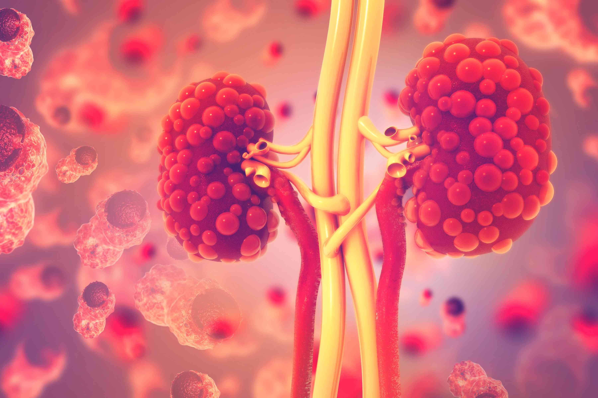

Chronic Kidney Disease (CKD) is a progressive condition where the kidneys gradually lose their ability to function properly. It can lead to complications such as high blood pressure, anemia, and kidney failure.Chronic kidney disease, also called chronic kidney failure, involves a gradual loss of kidney function. Your kidneys filter wastes and excess fluids from your blood, which are then removed in your urine. Advanced chronic kidney disease can cause dangerous levels of fluid, electrolytes and wastes to build up in your body Chronic Kidney Disease (CKD) is a long-term medical condition characterized by the gradual loss of kidney function over time. The kidneys are essential organs that filter waste products and excess fluids from the blood, which are then excreted in the urine. When kidney function declines, it can lead to the accumulation of waste products and fluids in the body, causing various health issues. CKD is defined by a decreased glomerular filtration rate (GFR) or evidence of kidney damage (such as protein in the urine) lasting for at least three months.
